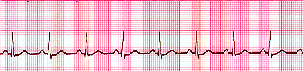
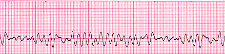
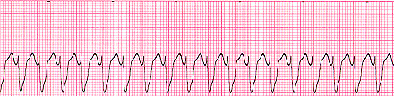
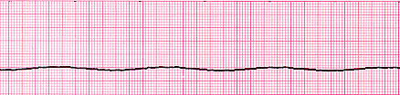
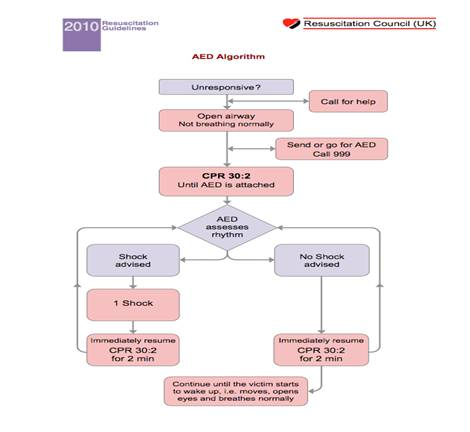
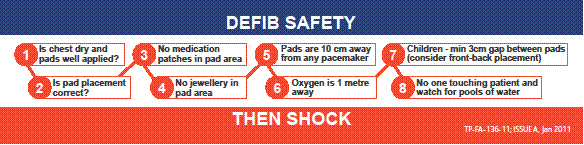
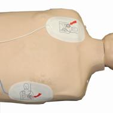
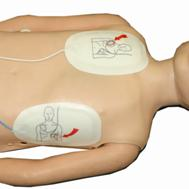

Defibrillator and associated kit
The defibrillator is a device that delivers a therapeutic dose of electrical energy to the affected heart. This electrical impulse actually in effect stops the heart in order to restart it. Your heart is made up of heart muscle which comprises of very unique cells that can, if they want to, initiate their own impulses, or beats. However, because your heart is also equipped with its very own natural pacemaker, these individual beats are actually coordinated and organised to produce a rhythm and this rhythm is known as your heart beat.
When there is a problem, i.e. a lack of oxygen to an area of heart muscle then the individual heart cells within that area will get very aggravated and potentially fire off randomly. In some cases this can lead to cardiac arrest rhythms. Cardiac arrest means that the patient stops breathing and the heart either completely stops or instead quivers. This quivering is a sign that the unhappy heart cells are impulsing at random and can produce the rhythm called ventricular fibrillation. Other cardiac arrest rhythms are ventricular tachycardia, very fast impulses that will not sustain a heart beat, pulseless electrical arrhythmia, any type of rhythm but no heart beat and asystole, where there is no electrical activity throughout the heart at all. These are shown below for information only, there is also a picture of what a normal heart rhythm should look like as well.

Normal Sinus Rhythm

Ventricular Fibrillation

Ventricular Tachycardia

Asystole
A defibrillator can be used to try to correct ventricular fibrillation and ventricular tachycardia as it will detect the chaotic electrical impulses and try to stop these in order for things to then restart in an organised fashion into a normal heart rhythm. If there is no electrical activity, as in asystole, then the defibrillator will not be able to do anything to correct things, and will advise no shock.
The algorithm below details where a defibrillator would come into use during a resuscitation.

Attached onto the defibrillator there is a safety sticker which details the safety checks that much be performed in order to defibrillate safely.

Pad placement is also important and is shown in the pictures

Adult pad placement

Child pad placement
Additional kit with the defibrillator includes a set of defibrillator pads, a pair of shears to cut through any clothing, a razor to shave the pad area if required and a towel to dry the patient if they are wet.